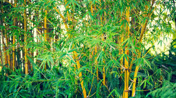

Bamboo (Bambusoideae)
Scientific Name: Bambusoideae
Description: Bamboo is one of the fastest-growing plants on Earth and belongs to the grass family. It is known for its tall, hollow, and woody stems called culms. Bamboo is highly versatile, being used for construction, furniture, paper, and even as a food source. It symbolizes strength, flexibility, and resilience in many cultures.
Care Tips:
- Water: Needs consistent watering, especially during dry periods.
- Light: Thrives in full sun but can tolerate partial shade.
- Temperature: Grows best in warm climates; some species tolerate cold too.
- Soil: Prefers well-drained, fertile soil rich in organic matter.
Uses:
Bamboo has countless uses - building material, crafts, musical instruments, food (bamboo shoots), and environmental protection (as it prevents soil erosion and absorbs carbon dioxide efficiently).